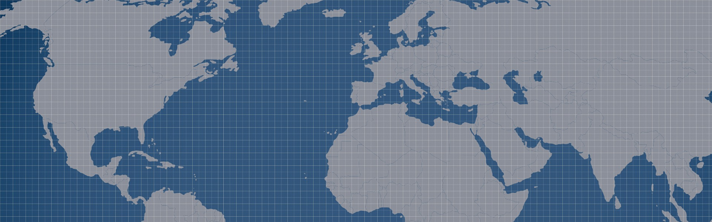

Previous
Next
Navbar
Home
(current)
Link
Dropdown
Action
Another action
Something else here
Disabled
Search
WELCOME
An active item
A second item
A third item
A fourth item
And a fifth one
Quote
Nama : Helena Septiana
Kelas : XI RPL 1